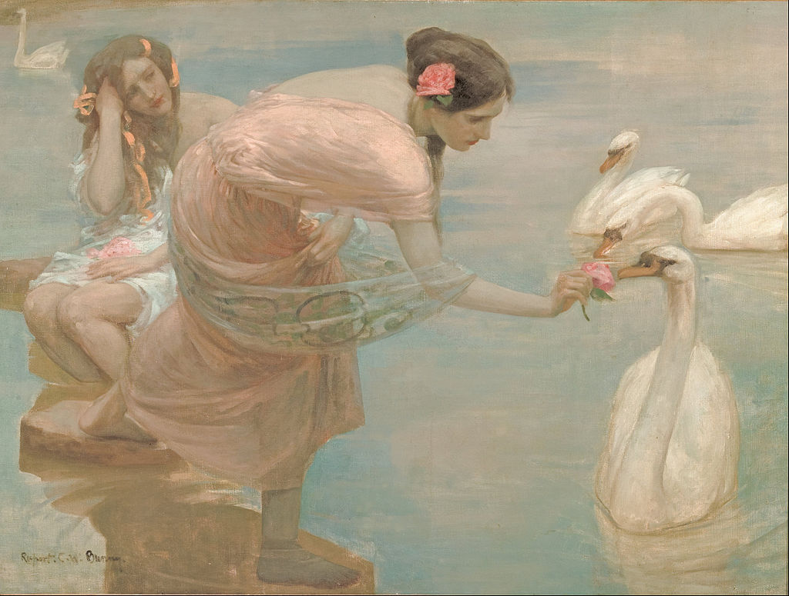

<head>
<meta charset="UTF-8" />
<meta name="keywords" content="drawing, painting" />
<meta name="description" content="drawings by Sunjy" />
<title>Sunjy</title>
<link rel="shortcut icon" type="image/x-icon" href="../../mImages/mCommon/favicon.ico" media="screen" />
<link rel="stylesheet" type="text/css" href="../../mCsses/mCommon/mCssA.css" />
<link rel="stylesheet" type="text/css" href="../../mCsses/mCommon/mCssB.css" />
<link rel="stylesheet" type="text/css" href="../../mCsses/mCommon/mCssC.css" />
<link rel="stylesheet" type="text/css" href="../../mCsses/mCommon/mCssD.css" />
<link rel="stylesheet" type="text/css" href="../../mCsses/mContent/mCssA.css" />
<link rel="stylesheet" type="text/css" href="../../mCsses/mContent/mCssB.css" />
<link rel="stylesheet" type="text/css" href="../../mCsses/mContent/mCssC.css" />
<link rel="stylesheet" type="text/css" href="../../mCsses/mContent/mCssD.css" />
</head>
<script type="text/javascript" src="../../mScripts/mContent/mContentAA.js" /></script>
<script type="text/javascript" src="../../mScripts/mContent/mContentAB.js" /></script>
<script type="text/javascript" src="../../mScripts/mContent/mContentAC.js" /></script>
<script type="text/javascript" src="../../mScripts/mContent/mContentAD.js" /></script>
<script type="text/javascript"></script> 
<script type="text/javascript">
document.write('<div class="mImgAbsolute"></div>');
/*
document.write('<p class="mFontSizeBColor" />From a white paper...</p>');
document.write('<table class="center"><tr><td>');
document.write('');
document.write('</td></tr></table>');
*/
</script>


<script type="text/javascript">
document.write('<p class="mFontSizeBColor" />A Summer Morning</p>');
document.write('<p class="mFontSizeSColor" />“A Summer Morning” by Rupert Bunny is a romantic portrayal of two women at leisure. He depicts the charmed and idyllic life of France’s comfortable existence preceding the First World War. <br><br>In this painting, Bunny has included a rose, a traditional symbol of love, as well as the white swans, which are symbolic of grace and beauty.<br><br>This dream-like painting imagines an ideal view of life and art. The picture incorporates aspects of symbolism and allegorical subjects, which smoothly flow between representations of antiquity and a familiar modern landscape.<br></p>');
document.write('<table class="center" /><tr><td>');
document.write('<br>In this painting, Bunny has included a rose, a traditional symbol of love, as well as the white swans, which are symbolic of grace and beauty.<br><br>This dream-like painting imagines an ideal view of life and art. The picture incorporates aspects of symbolism and allegorical subjects, which smoothly flow between representations of antiquity and a familiar modern landscape.<br>" />');
document.write('</td></tr></table>');
</script>


